Training for the people who deliver kidney care

The guides on this site answer questions. The Academy teaches roles. Each track is a complete, ordered course of study for one job in kidney care, written so that a new staff member can work through it module by module alongside supervised practice on the unit. It was built for studying on your own, bringing a new hire or a replacement up to speed, moving into a role you have not held before, and giving trainers and educators a ready teaching guide. Because each new staff member can study the basics before the first shift, it also shortens orientation, so preceptors can spend their time on the skills only your unit can teach.
Figure 1 · How the Academy differs from the guide library
Everything is free, needs no account, and sends nothing you answer to any server. Your progress is kept only in the browser on your own device.
Self-study, onboarding, a new role, and teaching
The same modules serve each purpose. What changes is who assigns them, in what order, and what counts as done.
Figure 2 · Five ways to use the Academy
Study tools in every module
Every module has the same tools for reading, listening and studying. Here is what each one does and where to find it.
The tools at a glance
Listening while driving? Start the module and choose the voice before you set off; the player keeps going from section to section without a tap. On an iPhone or iPad the natural voice keeps reading with the screen locked. The self-assessment quiz at the end needs the screen, so do it when it is safe.
Your notes, highlights, bookmarks, reading place and saved tracks stay on your own device. There is no account and nothing is sent anywhere. They do not move to another phone or computer; use Back up all under the orange pen button to keep a copy.
Same event, every role
Emergencies on the dialysis floor are handled by a team, so learn them as one. Same Event, Every Role follows one event through four roles, phase by phase: what the Hemodialysis Nurse, the Physician-on-Duty, the technician, and the Head Nurse each do, where the handoffs happen, and where it usually breaks. Read it alone, or run it at a huddle with everyone playing a role that is not their own.
Choose your role
Five tracks, one for each group of staff in a dialysis unit, with twenty-six subtracks between them. Each subtrack has its own course home, syllabus, and module self-assessments; most also have a trainer page and an end-of-course exam.
Nephrology Nursing Track
The Nephrology Nursing Track is arranged two ways. By Specialization: the Hemodialysis Nurse core course, with the Peritoneal Dialysis Nurse, Pediatric Dialysis Nurse and Kidney Transplant Nurse subtracks that branch from it. By Role: Head Nurse, for the nurse who leads the unit; Charge Nurse, for the nurse who leads the shift; and Special Dialysis Nurse Roles, for the nurse who holds a portfolio. Beside them sits the Dialysis Nurse Assistant / Patient Care Assistant (PCA) subtrack, for the supervised support worker who weighs, observes, prepares and reports on the nurse’s delegation; it is a support role, not a nursing specialty.
By SpecializationWhere the nurse practices: hemodialysis, peritoneal dialysis, or transplant
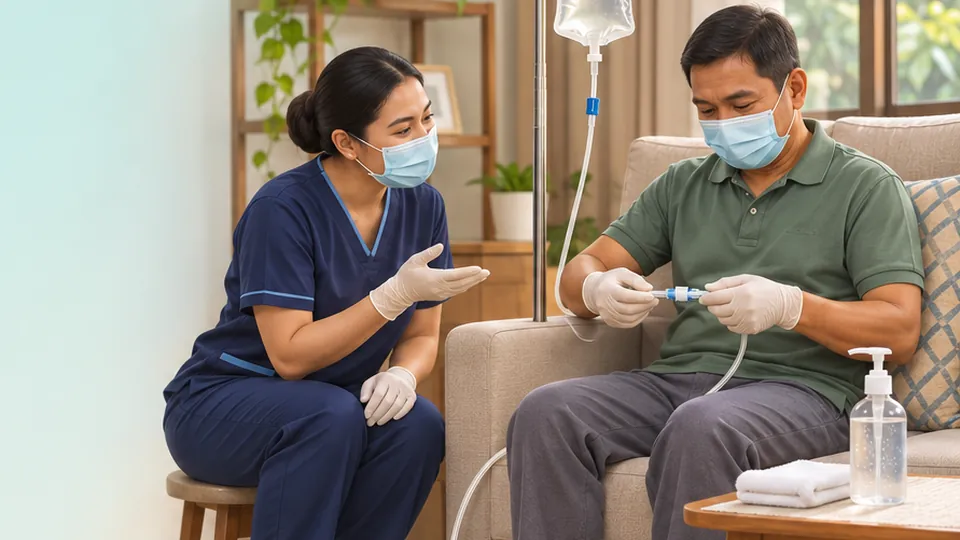
By Specialization · subtrackPeritoneal Dialysis Nurse 12 modules over six weeks for nurses in peritoneal dialysis, entered from Module 10. The catheter, CAPD and APD, monitoring, peritonitis, home teaching, and five skills stations, with an end-of-course exam.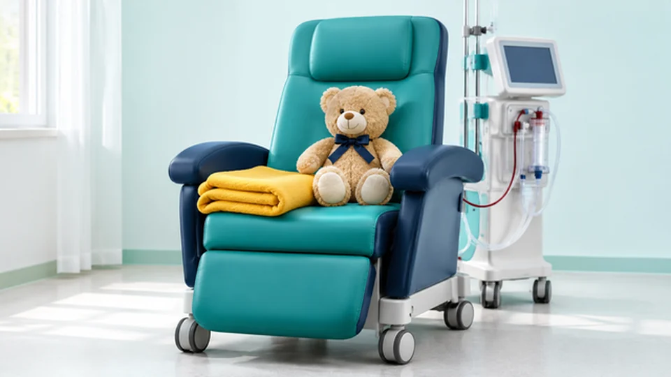
By Specialization · subtrackPediatric Dialysis Nurse 20 modules over eight weeks for nurses who dialyze infants, children and adolescents. Development and assent, weight-based arithmetic, PD and hemodialysis in small bodies, emergencies, growth, caregiver teaching and transition, with three interactive cases and an end-of-course exam. By Specialization · subtrackKidney Transplant Nurse 12 modules for kidney transplant ward and clinic nurses, entered from Module 11. Referral, donation, immunosuppression, graft and infection surveillance, PhilHealth benefits, and a simulation capstone.By RoleWhat the nurse is accountable for: leading the shift and the unit
By Role · leadershipHead NurseFor nurses who lead a hemodialysis shift or unit: safe opening, staffing and delegation, water and infection control, emergencies, records and PhilHealth, improvement, disasters, and the roster, absences, and replacements.13 modules · calculators in every module · end-of-course exam By Role · shift leadershipCharge NurseFor the nurse in charge of a hemodialysis shift: the opening sweep, the assignment and breaks, the live board, risk before connection, surveillance across many chairs, emergencies, downtime, handoffs, delegation, and the record.18 modules · a capstone · 8 shift calculators · end-of-course exam By Role · portfoliosSpecial Dialysis Nurse RolesFor the hemodialysis nurse assigned a portfolio: vascular access, infection prevention, educator and preceptor, patient education, quality, safety and emergencies, care coordination, anemia, transplant liaison, records and PhilHealth, water and equipment, and adequacy.14 modules · worked scenarios · portfolio toolkit · OSCE capstone By Role · supervised supportDialysis Nurse Assistant / PCAFor the supervised assistant beside the dialysis nurse: role and delegation, kidney failure, dignity and privacy, infection prevention, weights and observations, station readiness, access protection, emergencies, safe departure, cleaning, records and specimens, quality and disasters.12 modules · worked scenarios · assistant toolkit · six-station capstoneRenal Care Physicians Track
From the physician who heads the dialysis service, to the attending nephrologist and the attending pediatric nephrologist, to the physician on duty covering a shift, and the surgeon who creates and rescues the dialysis access.
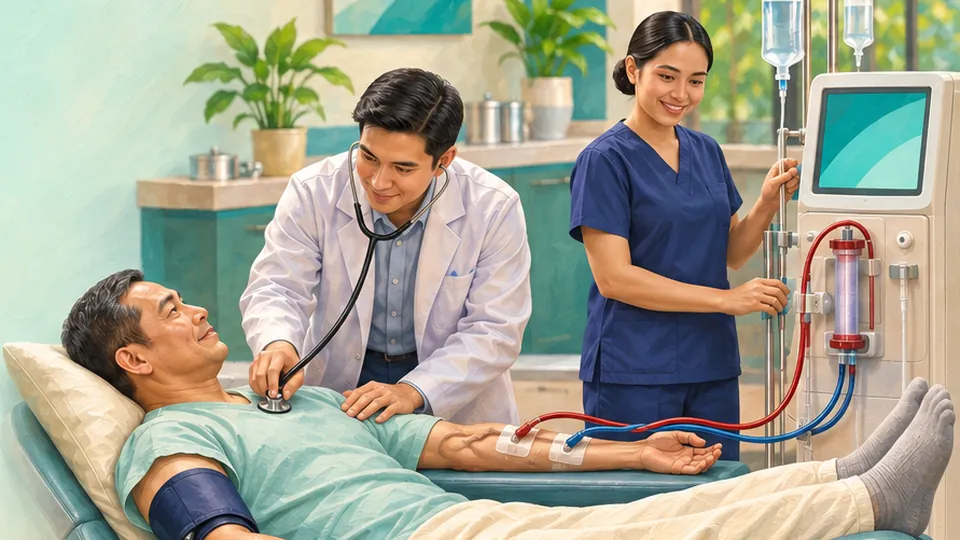
PhysiciansPhysician-on-DutyFor physicians covering a hemodialysis shift: how patients without kidney function differ, how the treatment works, assessment before and after a session, and emergencies in the chair.32 modules · three tiers · end-of-course exam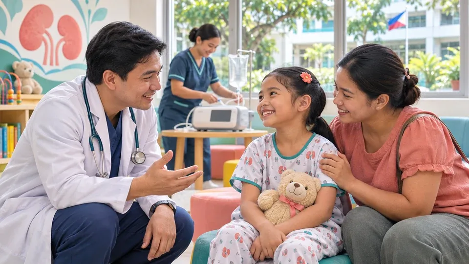
Attending pediatric nephrologistsAttending Pediatric NephrologistFor pediatric nephrologists and fellows: the growing kidney, fluid and electrolyte emergencies, hypertension, CAKUT and UTI, nephrotic and nephritic disease, HUS, neonatal and pediatric AKI, CKRT, CKD and growth, peritoneal dialysis and hemodialysis in children, transplantation, medicines, safeguarding and PhilHealth.29 modules · seven on dialysis · a capstone · calculators in every module · end-of-course exam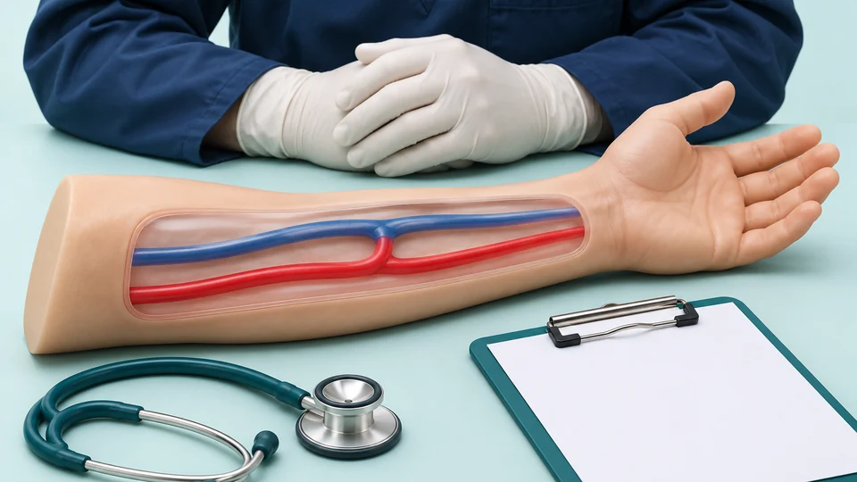
Vascular access surgeonsVascular SurgeonFor surgeons and supervised trainees who create and maintain dialysis access: the Life-Plan, mapping and creation, grafts and catheters, first use, salvage, hand ischemia, bleeding and infection, complex access, and quality.20 modules · a capstone · 3 new calculators · end-of-course examRenal Technicians Track
Four technician tracks written in the same format. Most people start at the chairside as a dialysis technician; three specialist branches lead to the water room, the biomedical workshop, and the dialyzer reuse room.
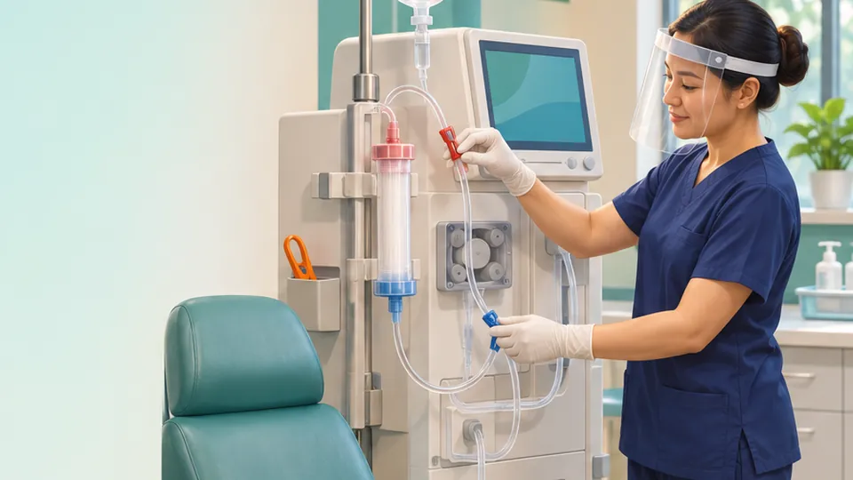
Foundation · chairsideDialysis TechnicianStations, machines, the blood circuit, the treatment session, and safe teamwork with the dialysis nurse.12 modules · skills checklists · trainer page · end-of-course exam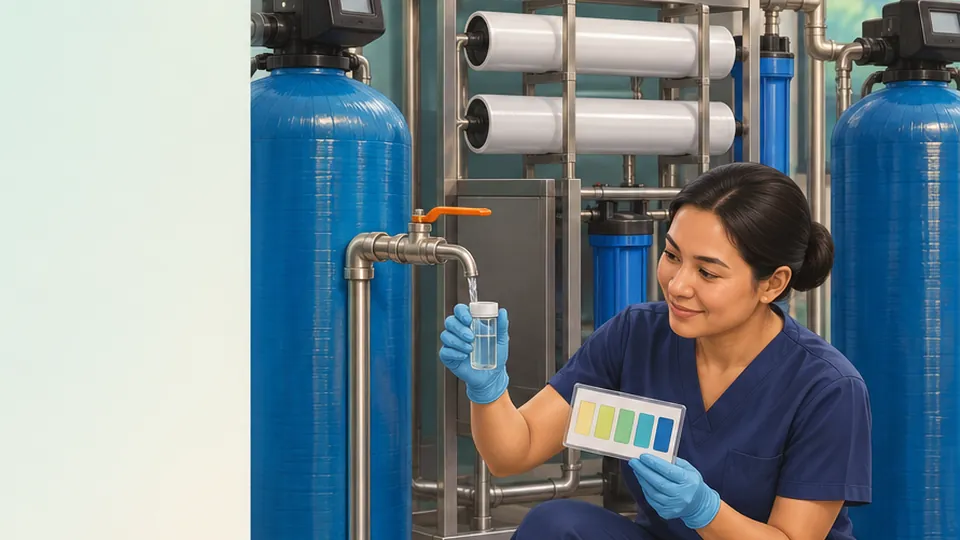
Specialist branch · water roomWater Treatment TechnicianPretreatment, carbon tanks, reverse osmosis, the distribution loop, daily testing, sampling, and disinfection.12 modules · skills checklists · trainer page · end-of-course exam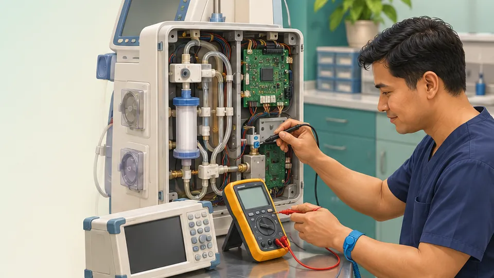
Specialist branch · workshopBiomedical Equipment TechnicianHow dialysis machines work inside, preventive maintenance, calibration, safety testing, troubleshooting, and return to service.12 modules · skills checklists · trainer page · end-of-course exam Specialist branch · reuse roomDialyzer Reprocessing TechnicianFor the people who clean, test and return a patient’s own dialyzer: the evidence on reuse, Philippine rules, infection and chemical safety, water, identity, cleaning, testing, storage and handoff, equipment faults, and quality. Builds on Dialysis Technician Module 11.12 modules · 480 planned hours · 6 training calculators · end-of-course examAncillary Staff Track
The renal dietitian who shares the clinical care, the transplant coordinator who walks kidney recipients and living donors through every gate, the social worker who sees the household behind every patient and keeps the person’s own goals at the center, the medical records officer who keeps the record that proves it, the occupational and physical therapists who restore movement and daily life, and the orderlies and environmental services aides who keep the unit clean, safe, and moving.
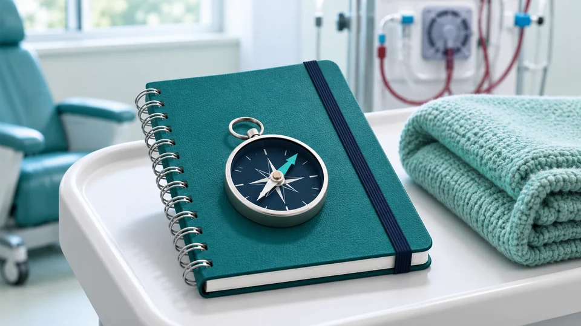
Social workersRenal Social WorkerFor the registered social worker in a dialysis unit, hospital, or transplant program: psychosocial assessment and formulation, PhilHealth and assistance navigation without promises, transport and work barriers, depression screening and immediate safety, caregivers and children, home therapy, donor protection, supportive care and bereavement, and continuity through transfers and typhoons.20 modules · professional and navigation paths · a six-tool toolkit · six observed stations · end-of-course check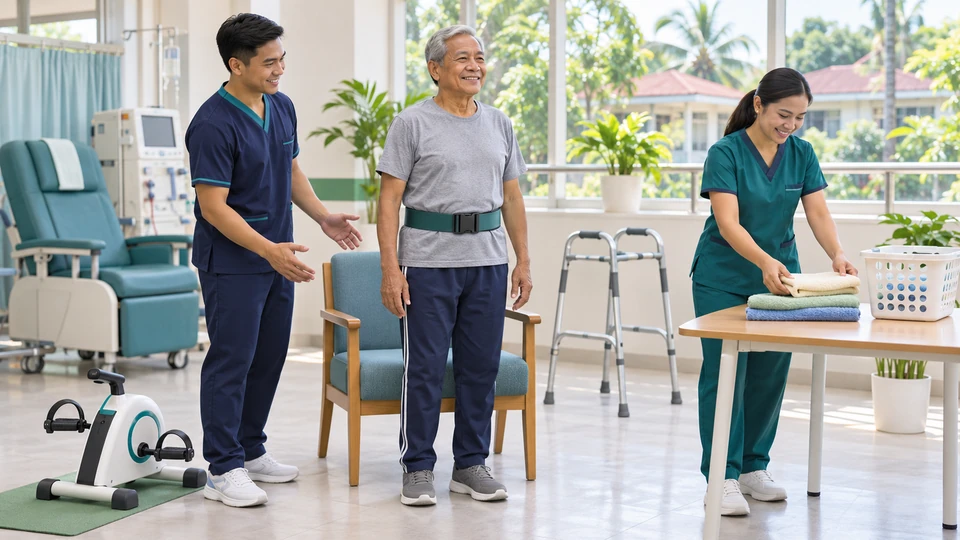
Occupational and physical therapistsOccupational and Physical TherapistRenal rehabilitation for licensed OTs and PTs: why kidney failure makes movement expensive, safe screening and escalation, access protection, function testing, exercise during and around dialysis, fatigue, falls, home and community access, transplant prehabilitation, and PhilHealth rehabilitation pathways.20 modules · OT and PT pathways · a six-tool rehabilitation toolkit · eight practical stations · end-of-course exam Orderlies and environmental services aidesDialysis Unit Support StaffFor the people who clean stations, move patients, and handle waste and linen: how germs travel, hand hygiene and PPE, cleaning products and wet contact time, station turnover, spills and sharps, health care waste, patient transport, safe lifting, emergencies, and knowing where your job stops.15 modules · six capstone stations · a calculator toolkit · end-of-course examAdministrative Staff Track
The people who keep a unit licensed, staffed, paid, and governed: the operations manager, the PhilHealth liaison and claims team, and the owners and boards who answer for the whole service.
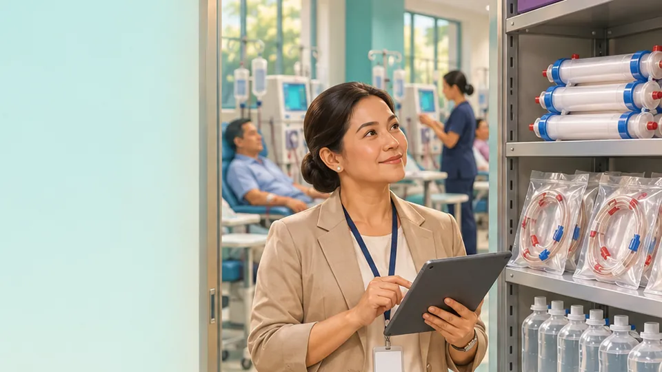
Unit managersUnit Operations Manager/Unit ManagerFor operations managers of freestanding and hospital dialysis units: decision rights, licensing, staffing, capacity, infection, water, emergencies, supplies, quality, claims, money, payroll, and benefits.19 modules · freestanding and hospital paths · a capstone · end-of-course exam Claims staffPhilHealth Liaison/Claims OfficerFor PhilHealth liaisons, claims officers, and clerks: eligibility and the dialysis database, the hemodialysis benefit, session evidence and codes, eClaims, returns and denials, reconciliation, privacy, the shift to DRG, and HMO claims and collections.13 modules + a capstone practicum · 7 calculators · end-of-course exam Owners and boardsDialysis Unit OwnerFor owners, investors, and boards of dialysis units: the owner’s authority and its limits, kidney care for non-clinicians, licensing, protected clinical leadership, ethics, capital, safe capacity, workforce, water and infection, PhilHealth stewardship, claims integrity, money, quality, privacy, continuity, and responsible exit.24 modules · 8 owner calculators · a capstone · end-of-course examWho can hold each role
A summary of what Philippine rules ask of each role, for orientation and hiring. Each subtrack’s course home repeats its own row. Where the DOH licensing rules and the PSN guidelines differ, both are shown; the PSN guideline is usually the stricter.
| Role | Qualifications |
|---|---|
| Nephrology Nursing Track | |
| Hemodialysis Nurse |
|
| Peritoneal Dialysis Nurse |
|
| Pediatric Dialysis Nurse |
|
| Kidney Transplant Nurse |
|
| Head Nurse |
|
| Charge Nurse |
|
| Dialysis Nurse Assistant / PCA |
|
| Renal Care Physicians Track | |
| Dialysis Clinical Head |
|
| Attending Nephrologist |
|
| Attending Pediatric Nephrologist |
|
| Vascular Surgeon |
|
| Physician-on-Duty |
|
| Renal Technicians Track | |
| Dialysis Technician |
|
| Water Treatment Technician |
|
| Biomedical Equipment Technician |
|
| Dialyzer Reprocessing Technician |
|
| Ancillary Staff Track | |
| Renal Dietitian |
|
| Medical Records Officer/Custodian |
|
| Renal Transplant Coordinator |
|
| Renal Social Worker |
|
| Occupational and Physical Therapist |
|
| Dialysis Unit Support Staff |
|
| Administrative Staff Track | |
| Unit Operations Manager/Unit Manager |
|
| PhilHealth Liaison/Claims Officer |
|
| Dialysis Unit Owner |
|
Sources: DOH Administrative Order No. 2012-0001, Sec. V.B.2.a; Philippine Society of Nephrology (2024), Guidelines for nephrologists in the operation of hemodialysis clinics, Sec. III.A; Republic Act No. 10862. A summary for orientation, not legal advice: check the current issuances, and your unit’s license and PhilHealth accreditation.
Onboarding a new hire
Give the new staff member the track on day one and agree on the order. The table suggests where to start so the first modules match the first shifts. It does not replace your unit’s orientation program or its competency sign-off.
| You are hiring | Assign | Start with | Before working alone |
|---|---|---|---|
| Hemodialysis nurse | Hemodialysis Nurse | Modules 6–9: principles, access, equipment and water, the session | Preceptor checklists for Modules 6–9 signed; self-assessments passed |
| Peritoneal dialysis nurse | Hemodialysis Nurse Module 10, then Peritoneal Dialysis Nurse | PD Modules 1–4: role, readiness, the catheter, CAPD | Five skills stations; end-of-course exam |
| Pediatric dialysis nurse | Pediatric Dialysis Nurse (adult dialysis training or pediatric nursing experience first) | Modules 1, 3, 4, and 15: role, assent and safeguarding, weight-based arithmetic, emergencies | Eight skills stations; end-of-course exam; facility sign-off by modality and age or size band |
| Transplant ward or clinic nurse | Hemodialysis Nurse Module 11, then Kidney Transplant Nurse | Modules 1, 5, and 6: role, early recovery, immunosuppression | End-of-course exam; unit sign-off |
| Dialysis nurse assistant or patient care assistant | Dialysis Nurse Assistant / PCA | Modules 1, 4, 5, and 7: role and delegation, infection prevention, weights and observations, the access | Practical BLS; observed sign-off on each delegated task; six capstone stations; end-of-course knowledge check |
| Head nurse, new or promoted | Head Nurse | Modules 1, 7, and 13: accountability, emergencies, the roster | End-of-course exam within the first 90 days |
| Attending nephrologist | Attending Nephrologist | Modules 1–4: responsibility, the consult, coverage, consent | End-of-course exam |
| Pediatric nephrologist starting an attending post | Attending Pediatric Nephrologist | Modules 1–4, 16 and 20–25: responsibility, assessment, fluids and electrolyte emergencies, CKRT, and pediatric PD and HD | Scenario stations; end-of-course exam |
| Access surgeon, new to a dialysis network | Vascular Surgeon | Modules 1, 2, 9, and 12–15: responsibility, the Life-Plan, first use, and the emergency set | Emergency stations; end-of-course exam |
| Physician on duty | Physician-on-Duty | Modules 1, 11, 13, 15, and 16: the first-shift set | Open modules completed; end-of-course exam |
| Dialysis technician | Dialysis Technician | Modules 1, 5, 6, and 9 in the first two weeks | Skills checklists; Module 12 competency assessment; exam |
| Water treatment technician | Water Treatment Technician | Modules 1, 4, 5, and 8: why it matters, chlorine, RO, daily logs | Skills checklists; end-of-course exam |
| Biomedical technician | Biomedical Equipment Technician | Modules 1, 7, and 11: safe working, alarm testing, electrical safety | Skills checklists; end-of-course exam |
| Reprocessing technician | Dialyzer Reprocessing Technician | Modules 1, 4, 7, 9, and 10: scope, infection safety, identity, acceptance gates, handoff | Skills checklists; observed practical; end-of-course exam |
| Renal dietitian | Renal Dietitian | Part 1, Modules 1–3: role, physiology, assessment | End-of-course exam |
| Medical records officer | Medical Records Officer/Custodian | Modules 1–3: authority, the chart, identity and intake | End-of-course exam |
| Transplant coordinator or Z Benefits coordinator | Renal Transplant Coordinator | Modules 1, 2, 6, and 10: two journeys, scope, donor protection, PhilHealth | Skills checklists; capstone; end-of-course check |
| Social worker new to kidney care, or a navigator | Renal Social Worker | Modules 1, 2, 5, 10, and 11: role and boundaries, the dialysis week, assessment, distress screening, immediate safety (navigators: Modules 1–4, 6–9, 17, 18) | Six observed stations; supervised practicum; end-of-course check |
| Occupational or physical therapist new to renal care | Occupational and Physical Therapist | Modules 1–5: role and referral, kidney disease and function, screening, access, assessment | Practical stations; end-of-course exam |
| Orderly, utility worker, or environmental services aide | Dialysis Unit Support Staff | Modules 1, 3, 4, and 9: scope, how germs travel, hand hygiene and PPE, spills and exposures | Observed sign-off on each assigned task; six capstone stations; end-of-course exam |
| Unit operations manager | Unit Operations Manager/Unit Manager | Module 1, then Module 13 (freestanding) or 14 (hospital) | End-of-course exam |
| PhilHealth liaison, claims officer, or clerk | PhilHealth Liaison/Claims Officer | Modules 1–4 before handling a claim | Module 11 practicum; end-of-course exam |
| Owner, investor, or board member | Dialysis Unit Owner | Modules 1, 2, 5, and 8: authority and its limits, the patient’s week, ethics, safe capacity | Portfolio; capstone with a clinical reviewer; end-of-course exam |
Trainer and educator pages in each track carry printable checklists and suggested schedules for the preceptor.
Moving into a new role
Most people join the Academy at one track and move to another as their job changes. These are the common moves and the track that prepares for each.
| Moving from | Moving to | Study |
|---|---|---|
| Hemodialysis staff nurse | Charge nurse or head nurse | Charge Nurse, then Head Nurse |
| Hemodialysis staff nurse | Peritoneal dialysis or transplant nurse | Hemodialysis Nurse Module 10 or 11, then Peritoneal Dialysis Nurse or Kidney Transplant Nurse |
| Dialysis nurse assistant who passes the nursing board | Hemodialysis staff nurse | Hemodialysis Nurse, from Module 1; the assistant modules do not count toward it |
| Head nurse | Unit operations manager or unit manager | Unit Operations Manager/Unit Manager |
| Clinician, manager, or family member | Owner or board member of a dialysis unit | Dialysis Unit Owner, with Dialysis Clinical Head Module 1 for the clinical side |
| Dialysis technician | Water room, biomedical workshop, or reuse room | Water Treatment Technician, Biomedical Equipment Technician, or Dialyzer Reprocessing Technician |
| Physician on duty or fellow | Attending nephrologist | Attending Nephrologist |
| Attending nephrologist | Clinical head of a dialysis service | Dialysis Clinical Head, starting with Modules 1 and 14 |
| Clerk or unit secretary | Claims officer or records officer | PhilHealth Liaison/Claims Officer or Medical Records Officer/Custodian |
The same format in every track
Figure 3 · Inside every module
- ObjectivesWhat you should be able to do by the end.
- LessonReasoning first, then the task, with figures and tables.
- CaseA fictional situation from an ordinary shift.
- Supervised practiceA checklist completed by a preceptor on real equipment.
- Self-assessmentQuestions drawn at random from a bank, with explanations.
Most tracks end with an end-of-course exam that draws 30 to 40 questions at random from every module, so a new attempt is a new test. A trainer page in each track gives preceptors printable checklists and a suggested schedule.
Modules link to the site’s guides and calculators as further reading, so the Academy and the guide library support each other without being mixed together.
What the Academy is, and is not
Study material, not certification
The Academy is self-study material. It is not a license, a certificate of training, or proof of competence, and it carries no Continuing Professional Development (CPD) units. Dialysis facilities in the Philippines are licensed by the Department of Health (DOH), and what each staff member may do is set by that license, the facility, and the supervising nurse and nephrologist.1,2 Competence is shown in supervised practice and signed off by a preceptor or training provider.
Looking for patient and clinician reading instead? The guide library, the calculators, and the drug index are separate sections of this site, and Academy modules link to them as further reading.